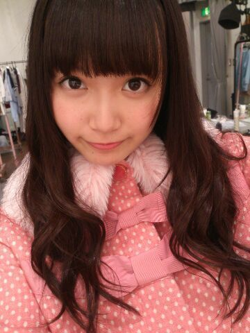
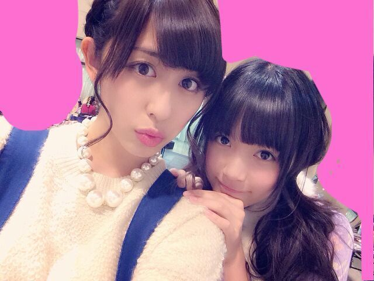

| 2014/02 07 Fri | ひめたん(*>ω<*)そ の405 |
ペットボトルのフタひねって
お茶だと思ってがぶっと飲んだら
酵素ドリンクの原液だったの。
酵素ドリンクにもいろいろあるけど
ひめたんが飲んでるやつは
何倍か炭酸水で薄めるやつなんだけどねー
やーびっくりしたー
濃！ってなったー
急に心臓どきどきしたー(´・ω・｀)うげー
みなさんこんばんはー
今晩も寒いんだってね！
みなさんあったかくしてねー
ひめたんは寒いとこいくと
すーぐすーぐ顔が赤くなっちゃう人で
ひめたん赤ちゃんみたい( ´ ▽ ` )って
言われてしまった
はー恥ずかしいー//////
ほっぺたが赤くなるだけなら
ちょっとかわいらしいなーで済むんだけど
ひめたんはお鼻まで真っ赤になるのね
まあ自分のコンプレックスなんて
挙げだしたらキリがないですけどもー
寒くて顔が真っ赤になる自分もまた嫌いだったな←
結論 冬は嫌いだ！
生写真「ファー」

きゅんきゅん王国の
王子様になりたいってひとが
いっぱいいるみたいなんだけどさー
王子様なりたいひとみんなで
じゃんけんでもして決めてー？
ケンカしたらしばくよー( ´ ▽ ` )＊＊

今夜のNOGIBINGO!2は
二期生さんとの
リベンジマッチですー(・∀・)
ぜひ夜更かしして観てくださいー♪

 ひめたん姫の執事になりたいんやけど
ひめたん姫の執事になりたいんやけど
どうやったらなれる？
そーやってひめたんを甘やかすのは
よくないとおもうなー
執事さんてのはなんかあれだから
おともだちになろー？☆
御意！
 女の子は「おにゃーのこ」じゃないですか、
女の子は「おにゃーのこ」じゃないですか、
男の子が「おとこのこ」なのは
不公平だと思うので、
男の子にもひめたんらしい呼び方を
考えてほしいです。
おとこのこじゃないなら
ぼーいずのみなさんかしらね
おにゃーのこ。ぼーいず。
ぼーい「ず」の「みんな」か......まーいいや
ぼーいずのみんな！いつもありがーと！
ひめたんが高校通学でもし利用するなら、
どっち！１.電車 ２.自転車
チャリすきですよー
チャリ通憧れますよー
ただ実際にチャリで通学したことはないですよー
ままに「危ないからやめてー」って
言われる(´・ω・｀)
中３組の中で、
それぞれの役割みたいなものは有るかな？
中３組の魅力のひとつは
それぞれがどっちの役回りもできちゃうことですね
だれかひとりがテンション高くなっても
ふたりでちゃーんと抑えるからねー
ただ、いくちゃんがたまに壊れすぎると
るんるんがもういいやーって放棄するけどねー♪
ひめたんはどんなお靴が好きですか？
今、どんなのを買おうかまよってます
ひめたんに選んでほしいのです←
ひめたんはねー
傾斜に弱いけどスタイル詐欺したいので
厚底のお靴が欲しいなーと思ってるなうです( ^ω^ )
狼に口笛をの12センチピンヒールは
心なしか顔がいつも引きつっております←
ねねころ推しなんですが、
ねねころの良いところ3つ教えてーひめたん！
◎ちっちゃいところ
◎ちっちゃいのにリアリストで堅実なところ
◎ちっちゃいのにお料理が上手なところ
最近ひめたんに
なついてくるメンバーって誰！？
ひめたんは結構自分から
かまちょーなことが多いんですが
あしゅとか川後さんとかは
あっちからべたーってしてきてくれます＊＊
 ひめたんはハムスターは好きですか？
ひめたんはハムスターは好きですか？
好きですよー♪
似てるってよく言われるので
親近感が湧きます∩^ω^∩
昔飼ってたことあるーよ
ひめたんはお寿司を食べるときは
サビありがいいですか？
それともサビ抜きがいいですか？
サビ抜きがいいですっ
サビ抜きしか食べれませんぬ。
わさび食べると涙腺が刺激されるみたいで
悲しくないのに泣いちゃう(´；；｀)
ひめたはバナナマンの日村さんみたいに
コーラを2秒で飲めますか？
まず炭酸があんま得意じゃないのです
コーラ。うん絶対無理だね！
ひめたんは これがないと寝れない！！
って物ある？？
最近はどこでも寝れるように
なってしまったのねー
あっ移動中はいちごちゃんU字クッションを
持ち歩くようにしてるよ
まりなちょすってゆー友達がくれたんだよ＊＊
ねーごめん本当にごめんなさい
ひめたん46
今日もおやすみさせてください...
いつもコメントたくさん
ありがとうございます( ^O^ )
DVDの感想
教えてくださったみなさんありがとーうっ
おにご！
あのねー結構いたよ
おにごって略すひと！
思ったのは
住んでる地域は多分関係ないねー
全国津々浦々
おにごって言う人は言うし
言わないひとは言わないみたいだし
ただね、ひめたんからひとつお願いがあります
もし周りのおともだちが
「おにごしよー」って言ったら
「へっ何だよおにごって(笑)」
「っこ くらい言えよ(笑)」
「なぜ略したし(笑)」
とか言わないであげてください(´・ω・｀)
心では思うかもしれない
でもね！それは心の中で思えばいいんだからね！
(＊´・ω・＊)
コメント(493)
2014/02/07 23:48